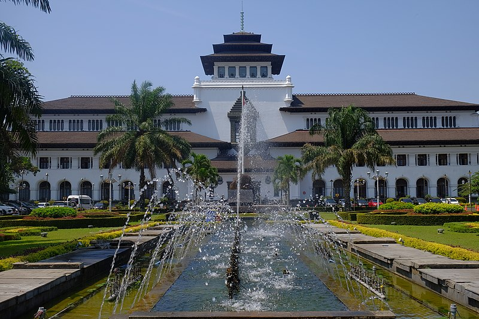
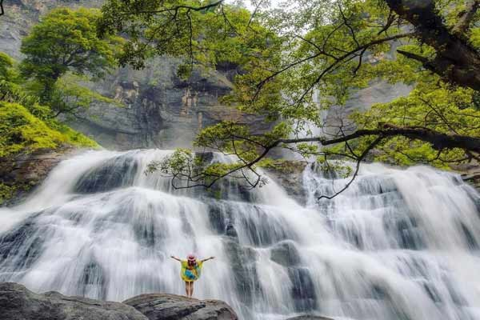

Home | Profil | Gallery | Kontak
SELAMAT DATANG ADVANTURE TRAVEL |
|
Wisata bumi undonesia yang wajib kamu tau !! |

Wisata BaliTemukan keindahan pulau Bali dengan pantainya yang eksotis, budaya yang kaya, dan makanan yang lezat. Baca selengkapnya |

Wisata BandungCek daftar tempat wisata di Bandung ini untuk jadi referensimu saat liburan ke Kota Kembang Baca slengkapnya |

Wisata Gunung BromoRasakan petualangan mendaki gunung Bromo dan saksikan matahari terbit yang spektakuler. Baca selengkapnya |

Wisata SukabumiTertarik mengunjungi Sukabumi, yang juga memiliki Geopark Ciletuh, yang dinobatkan sebagai UNESCO Global Geopark? 18 destinasi wisata ini bisa menjadi hiburan yang asyik Baca slengkapnya |
Layanan Kami
- Tiket
- Traveling booking
- Wisata
Hubungi kami di halaman kontak.